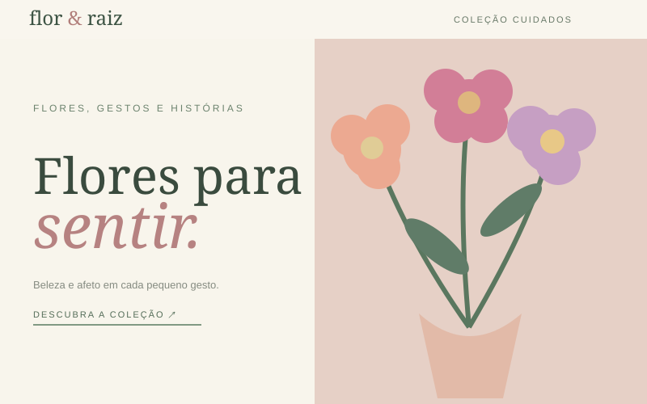
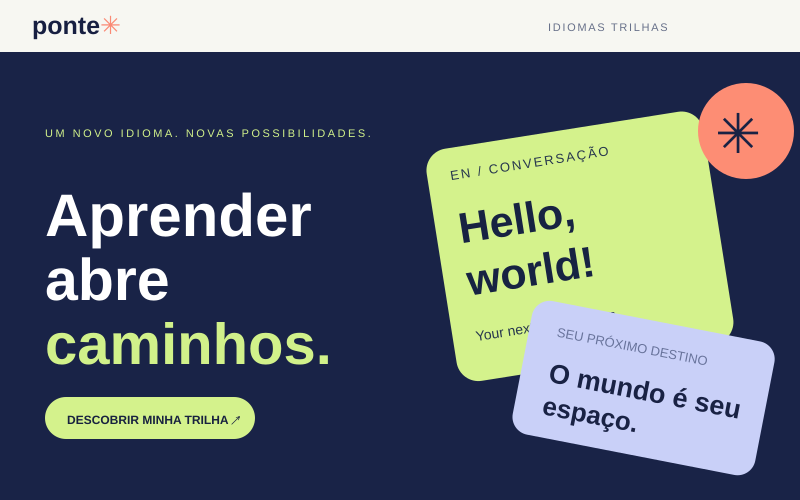
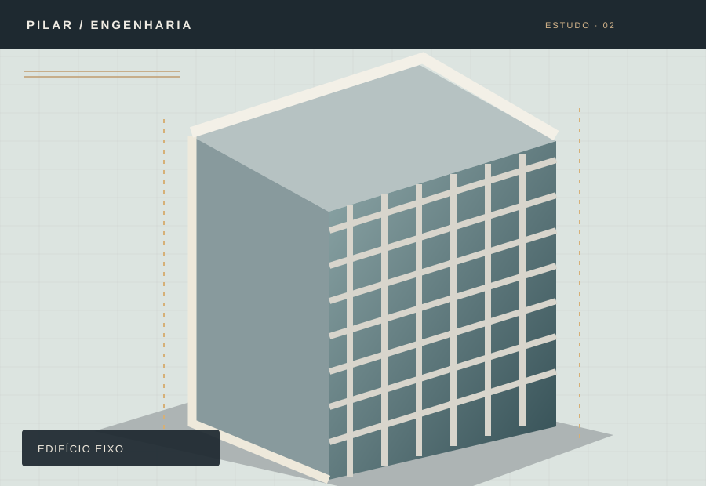
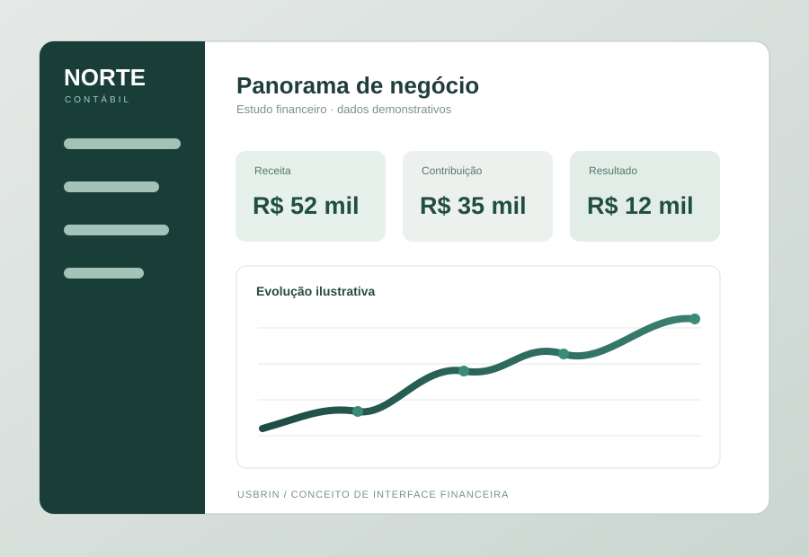
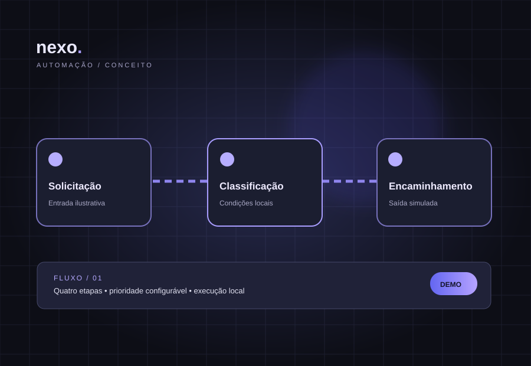

Projeto autoral · Conceito
Projeto autoral · ConceitoBrasa & Mesa
Uma apresentação acolhedora, com cardápio, informações e uma navegação pensada para despertar o apetite.
Uma coleção autoral de experiências digitais criada para mostrar o que uma boa presença online pode ser. Explore estilos, estruturas e soluções para imaginar o próximo site da sua empresa.
Navegue pelos projetos disponíveis e conheça cada experiência.
29 projetos disponíveis
Projeto autoral · ConceitoUma apresentação acolhedora, com cardápio, informações e uma navegação pensada para despertar o apetite.
 Projeto autoral · Conceito
Projeto autoral · ConceitoProjetos, especialidades e credibilidade reunidos numa experiência objetiva para o setor de construção.
 Projeto autoral · Conceito
Projeto autoral · ConceitoEspecialidades e atendimento apresentados com leveza, organização e uma linguagem visual acolhedora.
 Projeto autoral · Conceito
Projeto autoral · ConceitoUma estrutura para explorar propriedades, comparar informações e facilitar o primeiro contato.
 Projeto autoral · Conceito
Projeto autoral · ConceitoPortfólio arquitetônico de estética autoral, composições amplas e apresentação detalhada de ambientes.
 Projeto autoral · Conceito
Projeto autoral · ConceitoUma plataforma demonstrativa com painel interativo e narrativa clara sobre produtividade.

Projeto autoral · ConceitoCatálogo floral editorial com filtros e seleção interativa de composições, sem compras reais.

Projeto autoral · ConceitoUma jornada educativa com escolha de trilhas e mini-aula funcional para experimentar.

Projeto autoral · ConceitoPortfólio de estudos, etapas interativas e laboratório didático de estimativas com premissas explícitas.
 Projeto autoral · Conceito
Projeto autoral · ConceitoExperiência premium com pesquisa, filtros, comparação de duas peças e personalização demonstrativa.

Projeto autoral · ConceitoExperiência B2B corporativa com simulador de cenários operacionais, ponto de equilíbrio e indicadores ilustrativos.

Projeto autoral · ConceitoProjeto no estilo USBRIN: laboratório de fluxos configuráveis, prioridades e execução simulada etapa por etapa.
 Projeto autoral · Conceito
Projeto autoral · ConceitoLoja fotográfica com catálogo realista, busca, categorias, opções de produto e sacola demonstrativa.
 Projeto autoral · Conceito
Projeto autoral · ConceitoVitrine pet com fotografia de ambientação, filtros, detalhes, quantidades e carrinho de compra simulado.
 Projeto autoral · Conceito
Projeto autoral · ConceitoBoutique fotográfica com busca, coleção selecionada, estúdio de looks e guia de medidas de referência.
 Projeto autoral · Conceito
Projeto autoral · ConceitoCatálogo fotográfico com calculadora didática de revestimentos e pintura, mais lista de cotação interativa.
 Projeto autoral · Conceito
Projeto autoral · ConceitoVitrine fotográfica premium com pesquisa, sugestões por ocasião e orçamento, comparação de peças e embalagem ilustrativa.
 Projeto autoral · Conceito
Projeto autoral · ConceitoLoja editorial fotográfica com seleção de texturas e construção de um conjunto cosmético demonstrativo de três etapas.
 Projeto autoral · Conceito
Projeto autoral · ConceitoSite editorial fotográfico com suítes, comparação de acomodações e simulador ilustrativo de estadia e hóspedes.
 Projeto autoral · Conceito
Projeto autoral · ConceitoExperiência automotiva com fotografia real, seleção de pacotes e cálculo didático por porte do veículo.
 Projeto autoral · Conceito
Projeto autoral · ConceitoPortfólio fotográfico de interiores com configurador de ambiente, acabamentos e dimensões para um briefing copiável.
 Projeto autoral · Conceito
Projeto autoral · ConceitoSite institucional fotográfico com especialidades organizadas e preparação de contato sem coleta de dados de saúde.
 Projeto autoral · Conceito
Projeto autoral · ConceitoExperiência gastronômica fotográfica com cardápio pesquisável e seleção ilustrativa para diferentes momentos.
 Projeto autoral · Conceito
Projeto autoral · ConceitoGaleria fotográfica filtrável com ampliação acessível e briefing de ensaio preparado no navegador.
 Projeto autoral · Conceito
Projeto autoral · ConceitoCardápio fotográfico, busca e filtros com montagem interativa de seleção ilustrativa, sem pedidos reais.
 Projeto autoral · Conceito
Projeto autoral · ConceitoIdentidade fotográfica premium, serviços filtráveis e briefing ilustrativo de preferências, sem agenda real.
 Projeto autoral · Conceito
Projeto autoral · ConceitoSite corporativo com metodologia clara e mapa de prioridades interativo, sem avaliação de dados reais.
 Projeto autoral · Conceito
Projeto autoral · ConceitoCatálogo fotográfico com filtros e ateliê de bolos interativo, sem encomenda ou pagamento reais.
 Projeto autoral · Conceito
Projeto autoral · ConceitoInterface tecnológica com serviços de infraestrutura e laboratório local de recursos e custos hipotéticos.
Tente outra palavra ou escolha uma categoria diferente.
Esta coleção apresenta projetos autorais e marcas conceituais criados pela USBRIN para demonstrar possibilidades de design, organização e funcionalidades. Não representam contratos realizados com essas marcas.
Estamos desenvolvendo uma coleção de 50 projetos distribuídos por dez mercados. Cada nova entrega será publicada após avaliação de identidade, navegação, desempenho e usabilidade.
Cada empresa tem uma necessidade. Use os projetos como referência e construa uma proposta adaptada aos seus objetivos.